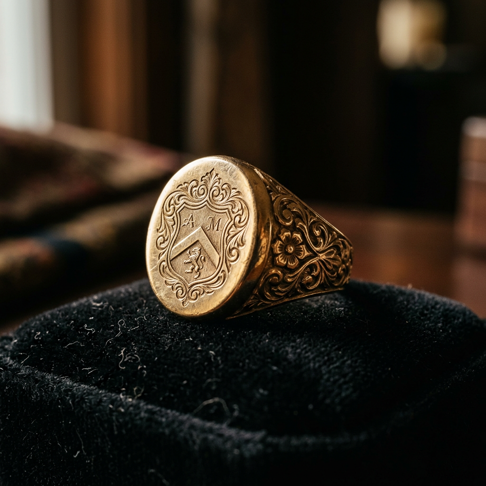
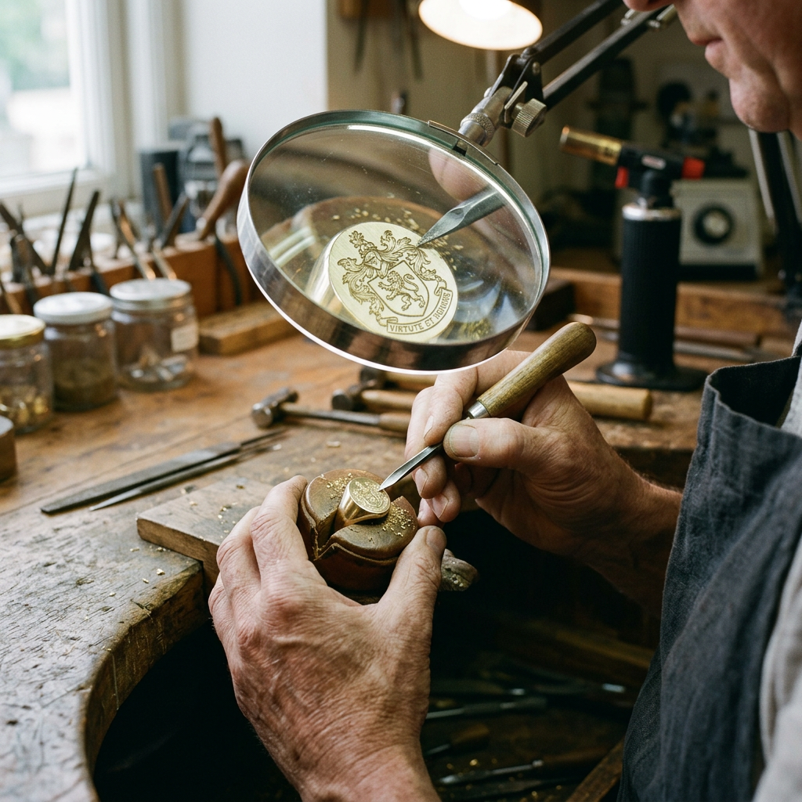

The Ultimate Guide to Signet Ring Jewellery: Crafting a Timeless Legacy
The Mark of Distinction: Why Signet Ring Jewellery is More Than a Trend
For centuries, the signet ring has served as more than just a decorative accessory. It was the 'gentleman’s ring,' a portable seal of authenticity, and a visual representation of lineage. Today, signet ring jewellery has seen a massive resurgence among high-intent buyers who value craftsmanship, heritage, and personal branding. But when you are looking to invest in a piece that is meant to last a lifetime—and perhaps be passed down to the next generation—how do you distinguish between a mass-produced trinket and a true heirloom?
Choosing the right signet ring requires an understanding of geometry, metallurgy, and the ancient art of engraving. This guide will walk you through the critical decision-making factors that ensure your investment reflects your status and personal story with absolute precision.

Understanding the Anatomy: Face Shapes and Proportions
The 'face' of the ring is its most defining feature. While personal preference plays a role, the shape of the signet ring should complement the wearer's hand and the complexity of the intended design.
- The Oval: This is the most traditional and popular shape. It is timeless, elegant, and provides a balanced canvas for most family crests or monograms.
- The Oxford (Square with Rounded Corners): A heavier, more masculine choice. The Oxford shape offers a substantial feel and is ideal for those with larger hands.
- The Cushion: A soft, square-like shape that was particularly popular during the Victorian era. It offers a vintage appeal that bridges the gap between the oval and the square.
- The Round: Often seen as a more modern or minimalist take, the round face is perfect for simple initials or contemporary geometric engravings.
The Metallurgy of Excellence: Gold vs. Silver
When purchasing signet ring jewellery, the choice of metal is not just about color; it is about durability and the crispness of the engraving over time. High-intent buyers should focus on solid metals rather than plated options.
18k vs. 9k Gold
18k gold is the gold standard for luxury signet rings. It has a rich, deep hue and is heavy on the finger, providing that unmistakable 'weight of quality.' However, gold is a soft metal. If you intend to wear your ring daily during manual labor, 9k gold offers superior hardness and durability, though it lacks the intense luster of its higher-carat counterpart.
Sterling Silver
For a sophisticated, cooler aesthetic, sterling silver is an excellent entry point. It develops a unique patina over time, which many collectors believe adds character to the piece. However, silver is softer than gold and may require more frequent polishing to maintain its brilliance.
The Art of Engraving: Seal vs. Surface
The soul of a signet ring lies in its engraving. This is where your personal story is etched into the metal. There are two primary methods to consider:
Deep Seal Engraving
Traditionally, signet rings were engraved in 'reverse' so that they could be pressed into hot wax to create a 3D seal. This requires a master engraver to carve deeply into the metal. A seal-engraved ring is a masterpiece of craftsmanship, designed to be functional as well as beautiful. This is the choice for the true connoisseur.
Surface Engraving
Surface engraving is shallower and is meant for visual appreciation only. It is perfect for modern monograms or decorative patterns. While less expensive than seal engraving, it still requires a steady hand to ensure the lines are clean and symmetrical.
Mastering the Fit: Which Finger?
Traditionally, the signet ring is worn on the pinky (little) finger of the non-dominant hand. This tradition stems from the ease of using the ring to seal documents. However, modern style has broken these barriers. Many now choose to wear larger signet rings on the ring or middle finger for a more commanding presence. When sizing, remember that signet rings are top-heavy; a precise fit is essential to prevent the ring from rotating uncomfortably on the finger.
A Legacy in the Making
Investing in signet ring jewellery is an exercise in intentionality. You are not just buying a piece of gold or silver; you are commissioning a symbol of your identity. By focusing on solid construction, a shape that suits your hand, and high-quality hand-engraving, you ensure that your ring will remain a powerful statement for decades to come.
Whether you are commemorating a milestone, honoring your family heritage, or simply establishing your own personal brand, the right signet ring is a silent ambassador of your values and your style. Choose with care, and wear it with the confidence of a legacy well-earned.
